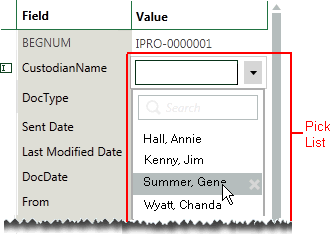

After completing Step 2: Load a Case Definition, click the Step 3. Define Database Fields tab.
Continue with the following steps:
-
For new fields, start with step 3.
-
For system fields, start with step 6.
On the Step 3 tab, click New Field.
Complete the New Field dialog box as shown in the following figure and explained in the following table. Note that not all options apply to (are available for) all fields.
When the field definition is complete, click one of the following buttons:
-
Save and New: Save the current definition and continue defining fields. The maximum number of fields that can be defined depends on the capacity of the SQL Server (but is essentially unlimited). Fields are listed in alphabetical order.
-
Save: Save your current definition and close the New Field dialog box.
|
Field Type |
Description |
||
|
Name |
Enter a name for the field.
|
||
|
Field Type |
Select the field type based on the data that will populate this field. |
||
|
Length |
FixedLengthText fields only: enter the maximum number of characters to be allowed (up to 4,000). The default setting is 255 characters. |
||
|
Format |
FixedLengthText or LongText fields only: select the type of text encoding, ASCII or Unicode. |
||
|
Pick List |
A pick list is a defined set of entries for a field. Reviewers who are editing records in Eclipse will select from the list of entries. The following figure shows a typical pick list in Eclipse.
 If you have already defined pick lists (which is done in Eclipse), then select a needed list. If pick lists have not yet been defined, this option can be changed after initial case creation. |
||
|
Group by |
Allows review batches to be grouped according to family relationships. By default, the BEGATTACH and MD5HASH fields have this option set. |
||
|
Category |
Allows review batches to be grouped by the contents of the field. For example, if this option is set to Yes for the NATIVEFILETYPE field, batches can be created that group documents based on file type. This option is not available for Date or DateTime fields. |
||
|
Hyperlink |
FixedLengthText fields only: select Yes to define a field as a hyperlink (to a file).
|
||
|
Include in Text Index |
Allows searching of field content. By default, fields are not included in searches users conduct in Eclipse. Select Yes to include field data in the dtSearch full text index. Select No to exclude the field from indexing.
|
||
|
Filter Field |
Allows the field to be enabled as a filter field, so long as it is either a date or non-integer field. If necessary, select a delimiter and separator in order to define the boundaries between separate values. A Hot Button for Visual Search can also be selected in order to make searching certain fields more easily.
|
||
|
Notes |
As
needed, enter details about the field. These notes appear
only in |

For system fields:
-
Click
 corresponding
to the system field to be configured. Change the field name and other
options as needed. Available options vary by field type.
corresponding
to the system field to be configured. Change the field name and other
options as needed. Available options vary by field type. -
When finished, click Save.
-
Repeat these steps to configure other system fields.
-
See the next step for the DOCUMENTDATE field.
For the DOCUMENTDATE field:
-
First make sure all needed date fields (Date or DateTime fields) have been defined (such as Sent Date, Creation Date, etc.), and that you know the order in which you want Eclipse to look for dates. The first date found is used in the timeline.
-
Click
corresponding
to DOCUMENTDATE. -
Change the field name and options as needed.
-
Click the Timeline tab.
-
Click Add Field, then click and select the first date field. Repeat to add other date fields.
-
When all date fields have been added, review the order of fields. Eclipse will use the first date found in the list (from top to bottom) for the timeline.
-
To change the order, click a field name in the list and click the up or down arrows until the field is in the desired location.
-
To delete a field from the list, click .
-
To change the valid date range from the default of 1/1/1970 - 12/31/2025, enter the needed date(s) or click
 and
select dates from the calendar.
and
select dates from the calendar. -
To assess dates based on parent documents alone, select the Use Parent DATE field for Child documents option.
-
When the list is as desired, click Save.
When you are finished, review the field definitions on the Step 3 tab and continue with one of the following steps:
-
If all system fields have not been identified/defined, go to Map System Fields below.
-
If changes are needed, see Modify or Delete Fields.
-
If all field definitions are complete, continue with Step 4: Select Case Options.